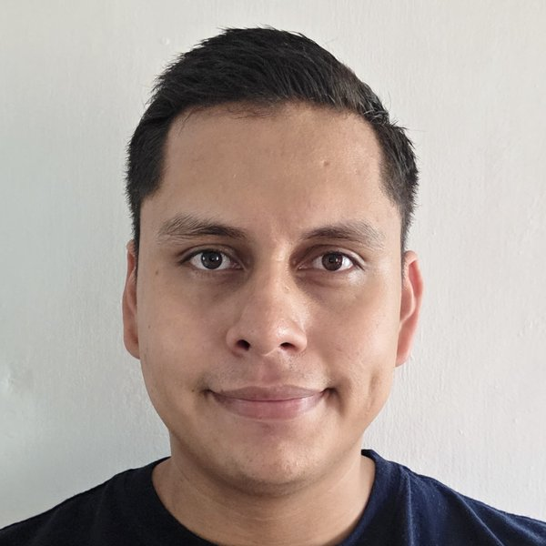
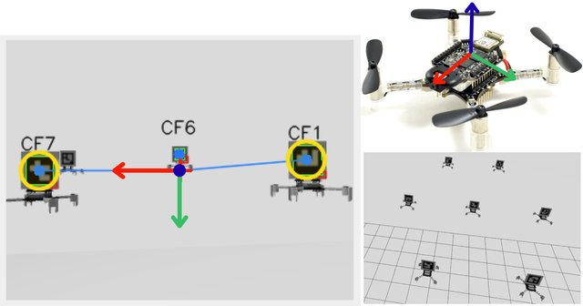
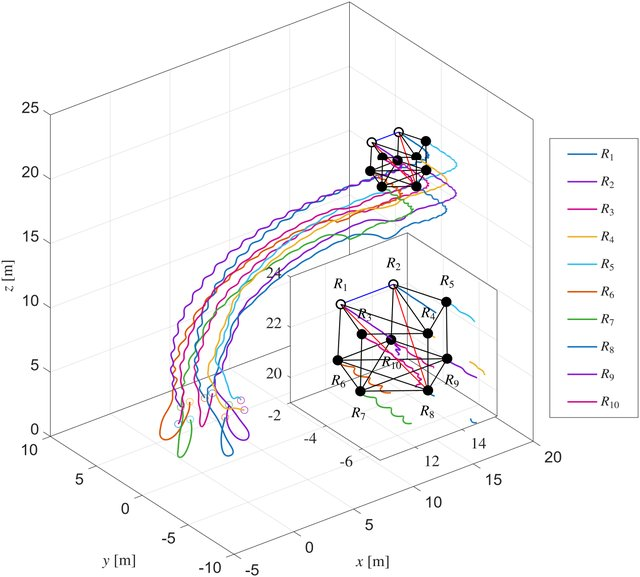
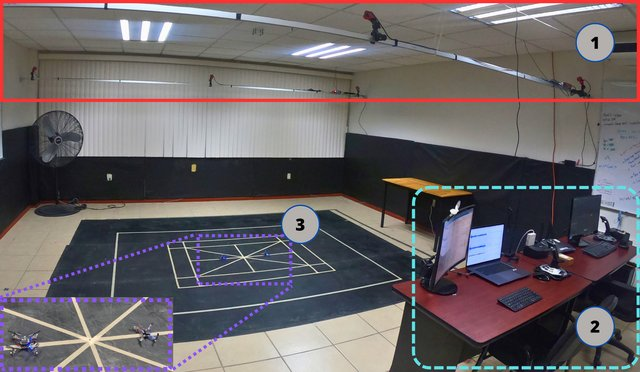
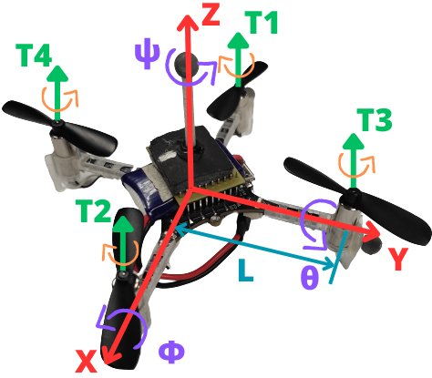
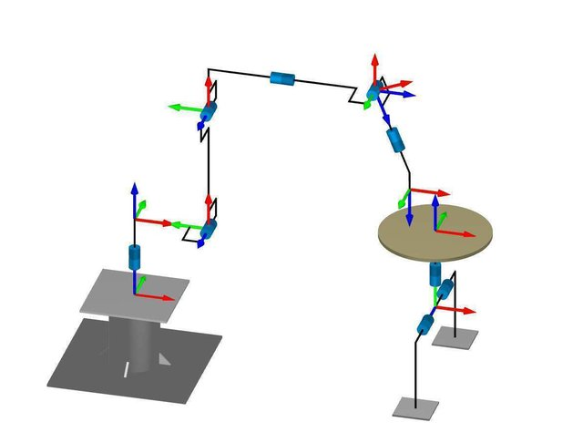
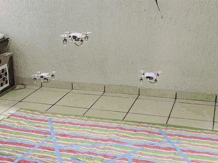
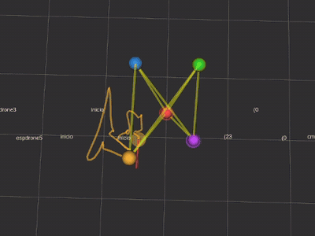

Julio Cesar Rodriguez Cervantes
PhD Student in Electrical Engineering · CINVESTAV Guadalajara
Lecturer at UVM and UNIVER
Multi-UAV systems · Bearing-only formation control · State estimation on S²
My research focuses on cooperative control of multi-UAV systems using only bearing measurements — no GPS, no distance sensors. Using robust nonlinear control techniques, I design formation controllers and state estimators that operate directly on the unit sphere S², enabling scalable drone swarms for GPS-denied environments.
Research interests: bearing-only formation control and estimation for multi-agent systems · robust nonlinear control techniques · applications to unmanned aerial systems (UAVs).
News
- Joined UNIVER as Adjunct Professor (Automation and Control).
- Paper “Bearing Estimation on S² via Tangent-Space Measurements for UAV Formation Control” presented at CCE 2026.
- Invited talk at the Workshop on Robotics and Motion Planning, CIMAT.
- Joined Universidad del Valle de México as Adjunct Professor.
Publications


2025 22nd International Conference on Electrical Engineering, Computing Science and Automatic Control (CCE), pp. 1–6


XXV Congreso Mexicano de Robótica (COMRob), 2023

2021 XXIII Robotics Mexican Congress (ComRob), pp. 145–151
Projects

Hardware (EasyEDA Pro) · ESP32 firmware · 2025 – Present
ESP32-S3 flight-controller board and a fully rewritten ESP-IDF 6 flight firmware with nonlinear controllers and on-board bearing-only formation control.

Real multi-quadrotor flights · ROS 2 · RViz · 2026
Distributed sliding-mode controller that drives the team to track a time-varying formation using only bearing measurements. Real flight with ESP-Drones (above) and its RViz view showing inter-agent bearings and trajectories.
Experience
Professor in Higher Education. Design and teach the Automation and Control course for Mechatronics Engineering students.
Teach undergraduate courses at the Health Sciences Academy, across the Biomedical Engineering, Biotechnology Engineering, and Pharmaceutical Chemistry-Biotechnology (B.Sc.) programs. Course load evolves each term:
- Fall 2025: Kinetics and Dynamics; Analog and Digital Electronics; Analysis and Design of Electronic Circuits.
- Spring 2026: Kinetics and Dynamics; Analog and Digital Electronics; Analysis and Design of Electronic Circuits; Advanced Programming; Power Electronics.
- Fall 2026 (current): Precalculus; Physiological Modeling; Image Analysis and Processing; Differential and Integral Calculus; Analog and Digital Electronics; Kinetics and Dynamics; Advanced Programming.
Across three semesters, designed course materials and labs spanning circuit theory, embedded/analog systems, mechanics, and programming for engineering undergraduates.
- Installed and commissioned automation equipment and conveyor systems for PepsiCo Gatorade (Indianapolis, USA) and E80 Group (Chicago, USA) projects.
- Installed and configured LGV (Laser Guided Vehicle) robots and supervised electromechanical warehouse equipment.
- Managed inbound/outbound warehouse logistics and inventory using SAP, and trained technical staff on automated machinery.
- Collaborated with the CFE-Andritz-Hydroproject and CFE-Andritz-Seisa consortia on the repowering and modernization of the “Peñitas” and “Angostura” hydroelectric power plants.
- Oversaw contractual work schedules to ensure compliance with deadlines.
- Managed additional and extraordinary works, including reworks and incident handling.
- Oversaw inbound shipments at the warehouse and tracked material delivery at the construction site.
- Monitored personnel attendance records and man-hours worked per activity.
- Reconciled contractual schedules with stakeholders.
- Designed and taught Differential Equations and Integral Calculus courses for Mechatronics Engineering and Chemical Engineering students.
Education
Bearing-only formation control and estimation for multi-quadrotor systems, validated in simulation, HIL and real flights. Funded by SECIHTI.
Thesis: formation controllers for quad-rotor multi-agent systems with experimental validation on nano aerial robots. Funded by CONACYT (now SECIHTI).
Internship: control subsystem for a 2-DOF cooperating positioner for a Fanuc ARC Mate 100iC arc-welding robot.
Invited Talks
Certifications
- End-to-end application of Meta's Segment Anything Model 3 to computer vision segmentation workflows.
Languages
- Spanish — Native
- English — Professional working proficiency
Stack
Python C++ MATLAB ROS 2 LaTeX Linux